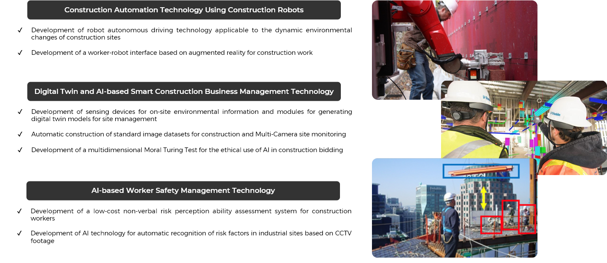
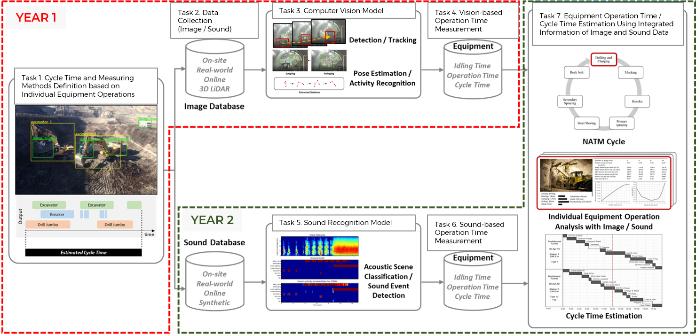
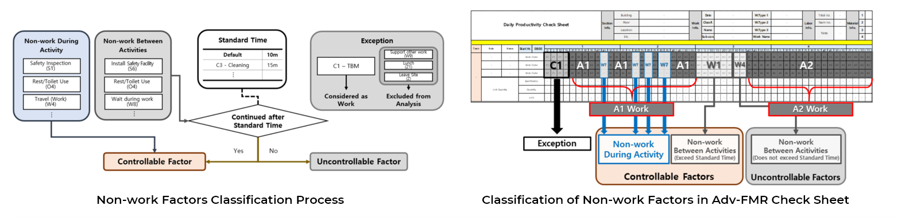
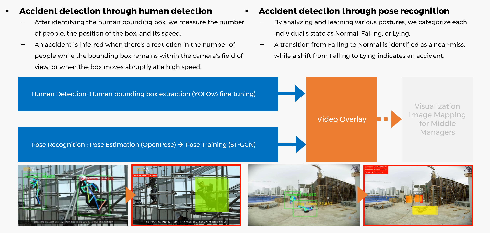

Email seongeup@andrew.cmu.edu
Tel +1-412-844-0214
Research Interests Human-System Interaction and Decision-Making, Safety Management
Aug 2024 – Present | Carnegie Mellon University
Mar 2023 – May 2024 | Seoul National University, SNUCEM
Mar 2021 – Feb 2023 | Seoul National University, SNUCEM
Mar 2016 – Feb 2021 | Kyung Hee University
DSA Best Data Award (First Place), American Society of Civil Engineering (ASCE), 2024
Brain Korea 21 Plus Fellowship, National Research Foundation of Korea (NRF), 2023
Engineering Education Research Foundation Scholarship, Seoul National University, 2023
Merit-based Scholarship, Seoul National University, 2023
English Language Proficiency Scholarship, Kyung Hee University, 2020
National Student Science & Invention Competition, Minister's Award, 2014
- Jeong, G., Park, S., Lee, J., Ahn, C. R. (2024) HangCon: A Benchmark Dataset for Enhanced Detection of Hanging Objects in Construction Sites. Journal of Computing in Civil Engineering Github
- Yoo, B., Kim, J., Park, S., Oh, T., Ahn, C. R. (2023) Harnessing Generative Pre-trained Transformers for Construction Accident Prediction with Saliency Visualization. Developments in the Built Environment
- Jung, G., Jung, M., Park, S., Park, M., Ahn, C. R. (2023) Contextual Multimodal Approach for Recognizing the Concurrent Activities of Equipment Vehicles in Tunnel Construction Projects. Automation in Construction link
- Lee, H., Lee, G., Park, S., Lee, S., Jacobs, J. V., Ahn, C. R. (2023) Collective Sensing of Workers' Loss of Body Balance for Slip, Trip, and Fall Hazard Identification: Field Validation Study. Journal of Computing in Civil Engineering
- Park, S., Lee, H., Ahn, C. R., Park, M. (2023) Human-independent activity recognition of construction worker. European Conference on Computing in Construction Github presentation
- Yeon, C., Park, M., Ahn, C. R., Park, S., Jeong, W., Yoon, I. (2022) A System Dynamics Approach to Modeling Safety Management for Mega Construction Projects. International System Dynamics Conference
- Kim, J., Yoon, I., Jung, M., Joo, S., Park, S., Hong, Y., Cho, J., Park, M. (2022) Establishment of Measurement Standards for Productivity Assessment in Construction Project. Korean Journal of Construction Engineering and Management
- Park, S., An, M., Xu, H., Ahn, C. R., Park, M. (2022) Construction worker's awkward posture recognition using wearable sensors. International Symposium on Architectural Interchanges in Asia Github
- Park, S., Park, M., Jeong, M., Kim, J. (2021) Derive Optimal Work Preparation Time Considering Construction Productivity-Considering the characteristics of the work section-. Journal of the Architectural Institute of Korea
Python (8 years), HTML/CSS/JavaScript (2 years), C/C++ (2 years), R (1 year), MATLAB (1 year), SQL (1 year), PHP (1 year)
Neo4j, Tableau, LaTeX, Vensim, AnyLogic, Git, SPSS, RapidMiner, Scan-to-BIM
Retrieval-Augmented Generation (RAG), Knowledge Graphs, Large Language Models (LLM), Activity Recognition with Wearable Sensors, Computer Vision (Object Detection, Depth Estimation, Pose Estimation), Sound Recognition
Data Mining, Visualization, Statistical Analysis, Web Scraping, API retrieval
Developing RAG and Knowledge Graph-based interfaces for safer remote management of multiple nuclear microreactors.
Duration Mar 2024 – Present
Sponsor Pennsylvania Infrastructure Technology Alliance (PITA)
Skills Retrieval Augmented Generation (RAG), Large Language Model (LLMs), Knowledge Graph
Compiled a comprehensive dataset using on-site CCTV footage and web-crawled images for detecting suspended objects at construction sites.
Duration Jan 2023 – May 2024
Sponsor Seoul National University
Skills Computer Vision, Web Scraping
Developed an AI model using daily construction work plans to estimate accident likelihood.
Duration Mar 2023 – Jan 2024
Sponsor National Research Foundation of Korea (NRF)
Skills Large Language Model (LLMs)
Integrated AI and robotics into construction through autonomous robot driving, augmented reality interfaces, on-site data capture, AI bidding processes, and AI-driven hazard identification using CCTV. Hosted seminars to promote interdisciplinary knowledge exchange.

Duration Jun 2022 – Dec 2023
Sponsor Seoul National University
Skills Computer Vision
Developed an AI model to manage NATM tunnel construction, analyzing cycle times by detecting equipment and categorizing activities using site video and audio recordings.

Duration May 2021 – Mar 2023
Sponsor Obayashi Corporation
Skills Computer Vision (Object Detection, Sound Recognition
Analyzed real-world data on semiconductor construction to understand productivity decline causes, established tailored measurement procedures, quantified influencing factors, and devised a model for work plan optimization.

Duration Feb 2021 – Dec 2022
Sponsor Samsung Electronics Corporation
Skills Causal Analysis, Statistical Analysis
Developed a safety management system using YOLOv3 for human and accident detection, and OpenPose and ST-GCN for posture analysis.

Duration Mar 2021 – Jun 2021
Skills Computer Vision (Object Detection, Pose Estimation), Web Scraping, Python
Optimized concrete beam designs with a focus on reducing CO2 emissions, used Autobeam for dataset generation, and leveraged MATLAB to develop a machine learning algorithm for cost-effective and eco-friendly designs.
Duration Oct 2019 – Feb 2020
Sponsor National Research Foundation of Korea (NRF)
Skills Machine Learning
Jan 2025 – Mar 2025 | Carnegie Mellon University
Conducted hands-on sessions on BIM with Revit.
Mar 2023 – June 2024 (2 semester) | Teaching Assistant, Seoul National University
Led hands-on sessions on data preprocessing and machine learning with RapidMiner.
Mar 2016 – Dec 2023
Enrolled in courses related to AI programming during undergraduate and graduate studies.
Undergraduate (7 courses): Introduction to Engineering Computer Programming, Programming Basis, Object-oriented Programming, Web and Python Programming, Easy-to-understand Software Coding, Computational Thinking, Discrete Structures
Graduate (9 courses): ICT-Based Smart Architecture, Theory and Lab of IoT, AI, and Big Data, Data Analysis and Visualization, Principles and Application of Data Science, Machine Learning and Deep Learning for Data Science 1, Fundamental Python Prototyping for Infrastructure Systems, Advanced Python for Infrastructure Systems, Introduction to Machine Learning, Generative AI
Mar 2016 – Feb 2021 | Kyung Hee University, KHlug
Participated in weekly Python and C++ study groups. Collaborated on the "Web Development on Tuesdays" project.
Jul 2012 – Nov 2019 | 158 hours
Sunhan Samaritan Orphanage (Mar 2018 - Nov 2019): Mentored children through educational volunteer work.
Myeongju Residence for Individuals with Disabilities (Jun 2013 - Jul 2013): Assisted residents with disabilities in daily tasks such as bathing, dining, and cleaning. Contributed to their care and comfort, enhancing the quality of their living environment.
Geumchon Elderly Care Facility (Jul 2012 - Jan 2013): Provided companionship to the elderly, assisted with meals, and participated in cleaning activities. Played a vital role in enhancing their daily living experience through attentive care and interaction.
Please feel free to contact me anytime.
Seongeun Park